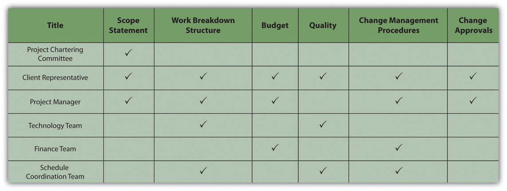

Projects always experience unexpected problems that produce stress. Dealing with problems with competence is vital to maintaining a good relationship with clients.
There are competing interests on projects, and the larger and more complex the project, the greater the number of issues and concerns that need to be addressed.
It’s 7:30 in the morning and the client called and wants you to have coffee in an hour with the new CEO, who flew in last night, to give him an update on the project. The concrete trucks were supposed to be on site at 7:00, but they have not arrived. A storm is predicted for tomorrow, and the concrete has to be in and covered before the storm hits. A news reporter called and said she has an unnamed source who claims that there is contamination of a nearby river coming from the project site.
The project manager decided to postpone a team meeting about project scheduling and cancelled lunch plans with his wife. It was going to be a busy day.
On large, complex projects, hundreds of decisions are made every day. Most of the decisions focus on the day-to-day operation of the project. Early in the project, decisions focus on choosing between alternative options for accomplishing project goals and determining how the project will be executed. Later, the focus is typically on solving problems. The project team develops solutions to deal with the barriers that emerge and develops alternative plans to meet project goals. The authority to make decisions is typically established early in the project and identified in a responsibility matrixTable of people and types of problems that might require decisions.—a table of people and types of problems that might require decisions—as shown in Figure 4.5 "The Responsibility Matrix".
Figure 4.5 The Responsibility Matrix
The responsibility matrix identifies roles and client involvement.
Decisions that influence the outcome of the project, such as a delay to the project completion date or an increase in the project costs, typically involve the client. Some clients prefer to make the final decision, with the project manager developing alternative solutions with a cost-benefit analysis of each of the alternatives. Others prefer to be involved in discussions to better understand the barriers, developing alternative solutions and making decisions in a team environment. Understanding the client’s decision-making preference and developing procedures and processes that support that preference is important to meeting client expectations.
Develop processes and methods that encourage both client and team members to identify issues and concerns early. Develop processes for dealing with these issues and concerns effectively. Define how and when decisions are made.
On projects with a low complexity level, the project manager and team leaders can make decisions informally, with short meetings or phone calls. Weekly or monthly staff meetings are appropriate for more complex decisions. Even though the decision-making process may be simpler on less complex projects, it is still important to understand the client’s expectation for inclusion in the decision-making process and recording decisions and changes in project plans.
On more complex projects, the use of action item registers, weekly staff meetings, responsibility matrices, and other tools foster the decision making on a timely basis. For project teams operating in diverse locations, Internet-based tools for recording and tracking action items can provide a location for capturing issues and concerns.
Project managers typically have a high degree of confidence in their ability to deal with issues and concerns as they arise. The delivery of some equipment is delayed a week, causing changes in the project schedule, or the beta test of a software program identified far more problems than expected. The project manager knows the problems, the team developed a solution, and the project has a plan for recovering. The project will be back on track soon. Should the project manager inform the client? The answer seems like an easy yes, yet many project managers often believe there is no reason to bother the client with a problem they have under control.
Then the second delay occurs on the equipment delivery or the fixes for the beta test are more costly than expected. Now the problems have elevated to the point the clients should be informed. The greater the distance between the time of the event and the time the client knows about the events, the greater the client’s frustration and mistrust. Including the client in the processes for analyzing project issues or concerns as well as the recovery planning enables the client to develop confidence that problems are being addressed. Including the client early in the process for dealing with problems enables the client to contribute with solutions and builds confidence that he or she is aware of critical issues on the project.
On a large, complex project in South America, the project team was reestimating the project cost and schedule projections after the project design was complete. The team was also conducting a new risk analysis, and the results of the cost and schedule projections, together with the risk analysis, provided the client with better cash flow projections. Early in the process, the project team understood that the cost projections would significantly increase, and the final project cost would be significantly above the contingency set aside for the project.
The client looked for an early indication of the results of the analysis, and the project manager kept reporting it was too early to know. The project team debated how much contingency the project needed and how to inform the client. When the client was told the results of the cost projections, the response was a combination of frustration and anger. The project manager was removed from the project and a new project manager assigned.
The project manager should have dealt with the increased cost of the project early on. When first indications suggested that estimates were low and several items in the budget needed extra funds, the project manager should have had conversations with the client. Including one or more members of the client’s team in the reevaluation effort would have kept the client informed of the progress regularly and built trust in the new numbers. The project team could have offered suggestions and contributed to possible solutions for addressing the concerns that were developing, as costs were higher than expected. Dealing openly and early with the client is critical to client satisfaction.
The project environment moves fast, and decisions are made and implemented to keep pace. Decisions made in the conceptual phase of the project seem less effective during the design phase. It is not that the decision was necessarily wrong; based on the data at the time, most decisions are understandable. With new information, it is sometimes important to revisit and change decisions made earlier in the project. As obvious as this sounds, many project teams are reluctant to challenge earlier decisions. Without a mechanism in place to revisit decisions, decisions may be seen as final. This sense of finality may slow down the decision-making process to make sure every decision is right. Delays in decisions can put activities behind schedule and affect the project completing on time.
Mechanisms for revisiting decisions are similar to project change orders. Similar to a change order, a request to revisit a decision must be initiated by someone on the team. The formality of methods used by the project to revisit a decision depends on the complexity profile of the project. On less complex projects, an informal discussion in project meetings can develop the awareness that a decision needs to be revisited. On more complex projects, the action item register and the weekly project meetings provide a venue for revisiting decisions.
Sometimes people asked that decisions be revisited because they did not like the decision that was made.
On an engineering project, the electrical design schedule was changed to support the completion of the activities on the critical path by a project milestone date. The change increased the number of hours needed to complete the work because of the change in work processes. The project manager accepted the costs of the change to achieve the milestone date, but the manager of the electrical engineering team objected because the change would cause their part of the job to exceed the budgeted amount. The project manager decided not to revisit the decision because no new information was available that would cause the decision to change.
Clients are often involved in major decisions on the project. For example, if the project invested another million dollars, the project could be completed a month early. The client will conduct the cost-benefit analysis and decide if the extra expense is worth the gain in time. Once this decision is made, the necessary changes are made in the execution plan and new goals are established through the change management process. Later, for reasons outside the control of the project, the project will not experience the time savings from the additional investment of funds. It is important to revisit the decision. A culture that encourages project team members to bring up the need for revisiting decisions and a mechanism that makes it easy to surface issues and concerns will increase the likelihood that these issues will come to the attention of the management team.
On a major pharmaceutical project in Ireland, a United States–based company was building a new plant to produce a new drug, and the priority was completing the plant to get the drug to the marketplace. The client was involved in the process to select major equipment, and after an expedited bidding process, an equipment vendor was selected for a critical piece of the plant equipment. Later, members of the project team learned that this vendor was overcommitted, and there was a high risk that the vendor would not be able to meet the schedule dates. Because it was the client’s decision, the project leadership was not warned of the possible risk. Weeks later, the vendor began missing critical dates, and the leadership became aware of the risks.
The client was furious that the decision was not revisited earlier in the project. Even though changes were made that brought the project back on track, the client did not trust the project team again. The project finished on time and within budget while meeting all quality specifications, but the client was not pleased.
Establishing a culture and a mechanism for revisiting project decisions is important for meeting client expectations.
An experienced project manager came up with a clever idea to enable his clients to capture the attention of the project team. He gave the client’s team a bright red index card and said, “This is your emergency button.” The card was a symbol. It empowered the client with the ability to capture the complete attention of the project team. When the client presented the red button, the project manager instantly stopped current activities and focused on the client. The red button meant the project leadership focused on understanding the issue or concern presented by the client and developing project priorities to meet the client’s concerns.
Although the red button was rarely used, it gave a sense of power to the client and communicated that the client was important. One project manager used the “red button” on four projects, and on two of the projects the card was never used. On one project, the client used the card to get the project ready for a visit from the client’s boss, and on the fourth project, the client used the card often. Although the project manager believed the card was overused to get the total attention of the project leadership team, he never regretted providing the client with the card. The “red button” card provided them a method to distinguish the really important needs of the client.
Threshold for Client Involvement
Consider a project with which you are familiar where the client was not included in making day-to-day decisions. Describe a type of problem that would be too small to take to the client for input and another problem that would be just large enough to require client involvement. If you were trying to communicate the reasons for your decision to another team member, describe the threshold that had to be crossed for the second problem to qualify for client involvement.